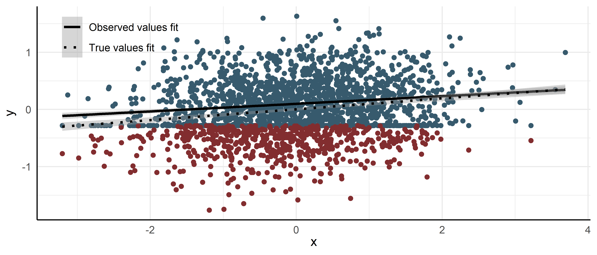

In environmental epidemiology – and environmental studies more generally – we often aim to detect trace levels of pollutants, metabolites, or biomarkers. Be it in a biospecimen like blood and urine or in environmental media such as soil, water, and air. This can be done with liquid/gas chromatography mass spectrometry instruments among others. Even though these instruments are very sensitive these days, they will sometimes hit their detection limits. This blog posts will briefly go over on how to handle such data statistically speaking, and what options are available in R to fit these models.
Censoring
Every epidemiologist is familiar with the standard survival analysis example that describes right censored observations. In this example, some participants are lost to follow-up or do not experience the event during the study. As a result, for these participants we only know that a possible event occurred somewhere after our observation period. These observations are then said to be right censored at the end of this window.
With the aforementioned instruments, the situation is flipped: we only know a value is less than a certain value. In these cases, our instrument can’t discern the analyte from background noise below a certain point. In other words, measurements on such an instrument were limited to a minimum measurement of \(l\) so any measurement smaller than \(l\) was recorded as \(l\). We refer to this minimum measurement as the limit of detection or limit of quantification and the data is said to be left-censored at this limit1. Measurements smaller than this simply cannot be measured with this instrument.2
Writing this in a more formal way, we can specify a latent regression model with an outcome that is either observed or unobserved:
\[
y_i^*= \begin{cases}y_i & \text { if } y_i>l \\
l & \text { if } y_i \leq l \end{cases}
\] where \(y_i\) represents the ‘true’, latent values, \(y_i^*\) are values we observe in reality, and \(l\) is the limit of detection3.
In most environmental studies (and the classical tobit model from economics)4 we then assume a normally distributed error term for the true values \(y_i\) so we write
\[
y_i \sim \mathrm{~N}\left(a+b x_i, \sigma^2\right), \text { for } i=1, \ldots, n
\] We can then estimate the parameters of the underlying distribution using the observed data \(y_i^*\) by including a separate term for the censoring mechanism in the likelihood:
\[
\operatorname{Pr}\left(y_i \leq l\right)=\int_{-\infty}^{l} \mathrm{N}\left(y_i \mid a+b x_i, \sigma^2\right)= \Phi\left(\frac{l - (a+b x_i)}{\sigma}\right)
\] such that the two terms of the likelihood become \[
y_i^*= \begin{cases}\mathrm{N}\left(y_i \mid a+b x_i, \sigma^2\right) & \text { if } y_i>l \\
\Phi\left(\frac{l - (a+b x_i)}{\sigma}\right) & \text { if } y_i \leq l \end{cases}
\] with the likelihood for the uncensored data points just being the normal probability density function.
Visually, the densities of \(y\) and \(y^*\) looks as follows:
so informally speaking, by virtue of the data being censored and not truncated we know the height of the probability mass and when we combine this information with the information from the uncensored observations, and the assumption we made on its distributional form we can ‘spread out’ the probability mass across the censored region and estimate the parameters of the latent/true data structure.
If we additionally simulate an effect of \(x\) on \(y\) and plot \(x\) vs \(y\) we can easily see that ignoring the censoring mechanism (or substituting by a constant value below the limit of detection as is often done – not shown) biases the estimate of the slope.
n <-2000prop_censored <-0.3b_1 <-0.1sd <-0.5x <-rnorm(n)y <-rnorm(n, x * b_1, sd)censor_point <-quantile(y, prop_censored)censored <- y <= censor_pointy_obs <-ifelse(censored, censor_point, y)df <- tibble::tibble(y, y_obs, x, censor_point)
Code
df |>ggplot() +geom_point(aes(x = x, y = y_obs), color ='#375A6D') +geom_point(data =subset(df, y <= censor_point),aes(x = x, y = y), color ='#822D2F') +geom_smooth(aes(x = x, y = y_obs, color ="Observed values fit"), method ="lm", linetype ="solid") +geom_smooth(aes(x = x, y = y, color ="True values fit"), method ='lm', linetype ="dotted") +scale_color_manual(name ="",values =c("True values fit"="dotted", "Observed values fit"="solid")) +scale_color_manual(name ="",values =c("True values fit"="black", "Observed values fit"="black")) +labs(x =expression(x),y =expression(y)) +theme(legend.position =c(0.15, 0.9))

Fitting a left-censored model using R
We can fit a model in R that accounts for the censoring mechanism by writing down the likelihood and passing it to optim to find the maximum:5
log_lik <-function(parameter_vector, x, y, l) { a <- parameter_vector[1] b <- parameter_vector[2] sigma <- parameter_vector[3] linear_predictor <- a + b*x# you could also do this more explicitly with an indicator variable and a multiplication ll_vec <-ifelse(y > l, dnorm(y, linear_predictor, sigma, log =TRUE),pnorm((l - linear_predictor)/sigma, log =TRUE))return(sum(ll_vec))}# initialize with a fit from the observed data, inits <- runif(3) will also work for simple modelsinitmod <-lm(y_obs ~1+ x, data = df)print(c(coef(initmod), sigma =summary(initmod)$sigma))
(Intercept) x sigma
0.09927942 0.06638911 0.38652839
init <-c(coef(initmod), sigma =log(summary(initmod)$sigma))mle <-optim(init, log_lik, lower =c(-Inf,-Inf, 1.e-5),method ="L-BFGS-B", control =list(fnscale =-1), x = df[['x']], y = df[['y_obs']], l = censor_point)mle$par
(Intercept) x sigma
0.0005055924 0.0974616424 0.5137657833
We can see that the procedure managed to recover the true values for \(\sigma\) (= 0.5) and \(\beta_1\) (= 0.1).
Of course there are also R packages that can do such a procedure for us. Both frequentist and Bayesian. Below an overview:
{survival}
In {survival} you can specify left-censored models just as you would specify right censored models using the Surv object. The censor_point can also be a vector and thereby allow your observations to be censored at different levels/limits.
Call:
survival::survreg(formula = survival::Surv(y_obs, y_obs > censor_point,
type = "left") ~ 1 + x, data = df, dist = "gaussian")
Value Std. Error z p
(Intercept) 0.000506 0.012272 0.04 0.97
x 0.097462 0.011836 8.23 <2e-16
Log(scale) -0.665992 0.020230 -32.92 <2e-16
Scale= 0.514
Gaussian distribution
Loglik(model)= -1587.6 Loglik(intercept only)= -1621.4
Chisq= 67.57 on 1 degrees of freedom, p= 2e-16
Number of Newton-Raphson Iterations: 3
n= 2000
You can get the same result by specifying the left-censoring as a special case of interval censoring:
m <- survival::survreg(survival::Surv(time =ifelse(y_obs == censor_point, -999, y_obs), time2 = censor_point,event =ifelse(y_obs == censor_point, 3, 1), type ="interval") ~1+ x, data = df,dist ="gaussian")summary(m)
Call:
survival::survreg(formula = survival::Surv(time = ifelse(y_obs ==
censor_point, -999, y_obs), time2 = censor_point, event = ifelse(y_obs ==
censor_point, 3, 1), type = "interval") ~ 1 + x, data = df,
dist = "gaussian")
Value Std. Error z p
(Intercept) 0.000506 0.012272 0.04 0.97
x 0.097462 0.011836 8.23 <2e-16
Log(scale) -0.665992 0.020230 -32.92 <2e-16
Scale= 0.514
Gaussian distribution
Loglik(model)= -1587.6 Loglik(intercept only)= -1621.4
Chisq= 67.57 on 1 degrees of freedom, p= 2e-16
Number of Newton-Raphson Iterations: 6
n= 2000
There’s also a lognormal distribution available in {survival}.
{censReg}
{censReg} does not support varying censoring points, as the left argument only allows a constant, whereas {survival} allows this by specifying a censor_point vector.
m <- censReg::censReg(y_obs ~1+ x, data = df, method ="BHHH", left =min(df$y_obs), right =Inf)summary(m)
Call:
censReg::censReg(formula = y_obs ~ 1 + x, left = min(df$y_obs),
right = Inf, data = df, method = "BHHH")
Observations:
Total Left-censored Uncensored Right-censored
2000 600 1400 0
Coefficients:
Estimate Std. error t value Pr(> t)
(Intercept) 0.0005067 0.0122142 0.041 0.967
x 0.0974645 0.0119876 8.130 4.28e-16 ***
logSigma -0.6659855 0.0209399 -31.805 < 2e-16 ***
---
Signif. codes: 0 '***' 0.001 '**' 0.01 '*' 0.05 '.' 0.1 ' ' 1
BHHH maximisation, 17 iterations
Return code 8: successive function values within relative tolerance limit (reltol)
Log-likelihood: -1587.58 on 3 Df
Multilevel left-censored models
Sometimes your data is more complicated and you want to specify different levels of your data. For example: a random intercept that specifies what subject or batch an observation belongs to. Your R package options are more limited then, as the frequentist approach now needs to additionally integrate over the random effects in the definition of the marginal likelihood.
The {survival} model does not support such models while {censReg} supports only a simple two-level random intercept model:
samples_p_batch <-100nr_batches <- n/samples_p_batchsd_batch <-2re_batch <-rep(rnorm(nr_batches, 0, sd_batch), each = samples_p_batch)y <-rnorm(n, x * b_1 + re_batch, sd)censor_point <-quantile(y, prop_censored)censored <- y <= censor_pointy_obs <-ifelse(censored, censor_point, y)df <- tibble::tibble(y, y_obs, x, censor_point, index =rep(1:samples_p_batch, times = nr_batches),batch_id =rep(1:nr_batches, each = samples_p_batch))
{censReg}
To get such a two-level random intercept model to work in {censReg} we have to create a {plm} object first6
pData <- plm::pdata.frame(df, c( "batch_id", "index"))m <- censReg::censReg(y_obs ~1+ x, data = pData, method ="BHHH", left =min(df$y_obs), right =Inf)summary(m)
One other frequentist package available for your left-censored models is {GLMMadaptive}. In addition to your observed outcome, you need to specify a vector with an indicator variable that describes whether the observation was censored:
m <- GLMMadaptive::mixed_model(cbind(y_obs, censored) ~1+ x, random =~1|batch_id, data = df,family = GLMMadaptive::censored.normal())summary(m)
Call:
GLMMadaptive::mixed_model(fixed = cbind(y_obs, censored) ~ 1 +
x, random = ~1 | batch_id, data = df, family = GLMMadaptive::censored.normal())
Data Descriptives:
Number of Observations: 2000
Number of Groups: 20
Model:
family: censored normal
link: identity
Fit statistics:
log.Lik AIC BIC
-1196.614 2401.229 2405.212
Random effects covariance matrix:
StdDev
(Intercept) 1.89308
Fixed effects:
Estimate Std.Err z-value p-value
(Intercept) -0.2812 0.4201 -0.6694 0.50326
x 0.0742 0.0126 5.8995 < 1e-04
log(residual std. dev.):
Estimate Std.Err
-0.6983 0.0192
Integration:
method: adaptive Gauss-Hermite quadrature rule
quadrature points: 11
Optimization:
method: hybrid EM and quasi-Newton
converged: TRUE
We can also use random slopes in GLMMadaptive. But only a single grouping factor (i.e., no nested (i.e. 2+ levels) or crossed random effects designs) is supported at the moment. {GLMMadaptive} is relatively fast. Unfortunately, when I had to fit more than 20 of these models for projects at least one of those models had convergence issues/errors. But perhaps someone with more feel for optimizer parameters is more successful.
And contrary to {censReg} you can extract the random effects:
For Bayesian software implementations the addition of random intercepts and slopes is less challenging, because it avoids the cumbersome integration. Similarly to {GLMMadaptive} we specify an additional indicator variable for our {brms} model, but this time left-censoring is indicated by \(-1\) (uncensored is \(0\) in brms and \(1\) indicates right censoring):
m <- brms::brm(y_obs |cens(censored) ~1+ x + (1|batch_id), data = df |> dplyr::mutate(censored = censored *-1), seed =2025, refresh =1000,backend ="cmdstanr", cores =4)
Family: gaussian
Links: mu = identity; sigma = identity
Formula: y_obs | cens(censored) ~ 1 + x + (1 | batch_id)
Data: dplyr::mutate(df, censored = censored * -1) (Number of observations: 2000)
Draws: 4 chains, each with iter = 2000; warmup = 1000; thin = 1;
total post-warmup draws = 4000
Multilevel Hyperparameters:
~batch_id (Number of levels: 20)
Estimate Est.Error l-95% CI u-95% CI Rhat Bulk_ESS Tail_ESS
sd(Intercept) 2.02 0.33 1.48 2.78 1.01 513 776
Regression Coefficients:
Estimate Est.Error l-95% CI u-95% CI Rhat Bulk_ESS Tail_ESS
Intercept -0.27 0.43 -1.19 0.54 1.01 408 511
x 0.07 0.01 0.05 0.10 1.00 1719 2001
Further Distributional Parameters:
Estimate Est.Error l-95% CI u-95% CI Rhat Bulk_ESS Tail_ESS
sigma 0.50 0.01 0.48 0.52 1.00 1585 1527
Draws were sampled using sample(hmc). For each parameter, Bulk_ESS
and Tail_ESS are effective sample size measures, and Rhat is the potential
scale reduction factor on split chains (at convergence, Rhat = 1).
If we print the actual STAN code we see familiar elements from our earlier likelihood:
brms::stancode(m)
// generated with brms 2.22.0
functions {
}
data {
int<lower=1> N; // total number of observations
vector[N] Y; // response variable
// censoring indicator: 0 = event, 1 = right, -1 = left, 2 = interval censored
array[N] int<lower=-1,upper=2> cens;
int<lower=1> K; // number of population-level effects
matrix[N, K] X; // population-level design matrix
int<lower=1> Kc; // number of population-level effects after centering
// data for group-level effects of ID 1
int<lower=1> N_1; // number of grouping levels
int<lower=1> M_1; // number of coefficients per level
array[N] int<lower=1> J_1; // grouping indicator per observation
// group-level predictor values
vector[N] Z_1_1;
int prior_only; // should the likelihood be ignored?
}
transformed data {
// indices of censored data
int Nevent = 0;
int Nrcens = 0;
int Nlcens = 0;
array[N] int Jevent;
array[N] int Jrcens;
array[N] int Jlcens;
matrix[N, Kc] Xc; // centered version of X without an intercept
vector[Kc] means_X; // column means of X before centering
// collect indices of censored data
for (n in 1:N) {
if (cens[n] == 0) {
Nevent += 1;
Jevent[Nevent] = n;
} else if (cens[n] == 1) {
Nrcens += 1;
Jrcens[Nrcens] = n;
} else if (cens[n] == -1) {
Nlcens += 1;
Jlcens[Nlcens] = n;
}
}
for (i in 2:K) {
means_X[i - 1] = mean(X[, i]);
Xc[, i - 1] = X[, i] - means_X[i - 1];
}
}
parameters {
vector[Kc] b; // regression coefficients
real Intercept; // temporary intercept for centered predictors
real<lower=0> sigma; // dispersion parameter
vector<lower=0>[M_1] sd_1; // group-level standard deviations
array[M_1] vector[N_1] z_1; // standardized group-level effects
}
transformed parameters {
vector[N_1] r_1_1; // actual group-level effects
real lprior = 0; // prior contributions to the log posterior
r_1_1 = (sd_1[1] * (z_1[1]));
lprior += student_t_lpdf(Intercept | 3, 0.1, 2.5);
lprior += student_t_lpdf(sigma | 3, 0, 2.5)
- 1 * student_t_lccdf(0 | 3, 0, 2.5);
lprior += student_t_lpdf(sd_1 | 3, 0, 2.5)
- 1 * student_t_lccdf(0 | 3, 0, 2.5);
}
model {
// likelihood including constants
if (!prior_only) {
// initialize linear predictor term
vector[N] mu = rep_vector(0.0, N);
mu += Intercept + Xc * b;
for (n in 1:N) {
// add more terms to the linear predictor
mu[n] += r_1_1[J_1[n]] * Z_1_1[n];
}
// vectorized log-likelihood contributions of censored data
target += normal_lpdf(Y[Jevent[1:Nevent]] | mu[Jevent[1:Nevent]], sigma);
target += normal_lccdf(Y[Jrcens[1:Nrcens]] | mu[Jrcens[1:Nrcens]], sigma);
target += normal_lcdf(Y[Jlcens[1:Nlcens]] | mu[Jlcens[1:Nlcens]], sigma);
}
// priors including constants
target += lprior;
target += std_normal_lpdf(z_1[1]);
}
generated quantities {
// actual population-level intercept
real b_Intercept = Intercept - dot_product(means_X, b);
}
With {brms} the possibilities are almost endless7 and fortunately its speed has also improved the last few years. My censored models usually converge out of the box, even with multiple random intercept terms. And with some reasonably strong priors I’ve also had success with high proportions of censored data (say >80%).
{MCMCglmm}
{MCMCglmm} also supports left-censored multilevel (>two-level?) models. The random effect notation is a bit different though. The intercept is varying by subject here (random intercept), random = ~us(1+fixed_effect):cluster gives a random intercept/slope model with estimated covariance, and random = ~idh(1+fixed_effect):cluster is the same but with the covariance set to 0. We can specify a left-censored outcome by creating two variables. If left-censored, y_obs_min is -Inf and y_obs_max takes on the value of the censoring point, in the other, non censored cases y_obs_min and y_obs_max are identical and take on the observed value:
library(MCMCglmm)m <- MCMCglmm::MCMCglmm(cbind(y_obs_min, y_obs_max) ~1+ x , random =~ batch_id, family ="cengaussian", data = df |> dplyr::mutate(y_obs_min =ifelse(censored ==1, -Inf, y_obs),y_obs_max =ifelse(censored ==1, censor_point, y_obs)) |>data.frame(),nitt =20000, thin =1, burnin =10000,verbose =FALSE)
summary(m)
Iterations = 10001:20000
Thinning interval = 1
Sample size = 10000
DIC: 2077.777
G-structure: ~batch_id
post.mean l-95% CI u-95% CI eff.samp
batch_id 4.123 1.728 7.005 3863
R-structure: ~units
post.mean l-95% CI u-95% CI eff.samp
units 0.2479 0.2298 0.2675 2027
Location effects: cbind(y_obs_min, y_obs_max) ~ 1 + x
post.mean l-95% CI u-95% CI eff.samp pMCMC
(Intercept) -0.27949 -1.11097 0.68806 9673 0.518
x 0.07432 0.04962 0.09862 4620 <1e-04 ***
---
Signif. codes: 0 '***' 0.001 '**' 0.01 '*' 0.05 '.' 0.1 ' ' 1
The G structure refers to the random effect structure, while the R structure is the residual structure.
I think by default you do not get easy interpretable scale parameters, but you can obtain an estimate by taking the square root of the posterior distribution of the (co)variance matrices:
summary(sqrt(m$VCV))[[1]]
Mean SD Naive SE Time-series SE
batch_id 2.0001114 0.350291352 3.502914e-03 0.0057400762
units 0.4978472 0.009719887 9.719887e-05 0.0002157377
{INLA}
Lastly I want to mention the {INLA} package. It seems like it’s neither purely frequentist nor fully Bayesian but instead approximates the posterior marginals. It’s mostly used in spatial statistics so perhaps this makes it the ideal candidate for censored concentration measurements with a spatial element, say a measurement campaign. Its interface is slightly unusual for the R regression packages I’m familiar with, but it is very, very fast! Many censored likelihood families are supported, but unfortunately the Gaussian family is not one of them:
A censored gamma and lognormal family8 are present though and these are also useful in environmental studies.
You specify censoring using a inla.surv where left-censoring is coded as \(2\) and uncensored observations get a \(1\) indicator:
library(INLA)# simulate lognormal datasamples_p_batch <-100nr_batches <- n/samples_p_batchsd_batch <-2re_batch <-rep(rnorm(nr_batches, 0, sd_batch), each = samples_p_batch)y <-rlnorm(n, x * b_1 + re_batch, sd)censor_point <-quantile(y, prop_censored)censored <- y <= censor_pointy_obs <-ifelse(censored, censor_point, y)df <- tibble::tibble(y, y_obs, x, censor_point, index =rep(1:samples_p_batch, times = nr_batches),batch_id =rep(1:nr_batches, each = samples_p_batch)) |> dplyr::mutate(censored =ifelse(censored ==1, 2, 1))surv_obj <-inla.surv(df$y_obs, df$censored)m <-inla(surv_obj ~1+ x +f(batch_id, model ="iid"), data = df, family ="lognormal.surv", control.compute =list(config =TRUE))
summary(m)
Call:
c("inla.core(formula = formula, family = family, contrasts = contrasts,
", " data = data, quantiles = quantiles, E = E, offset = offset, ", "
scale = scale, weights = weights, Ntrials = Ntrials, strata = strata,
", " lp.scale = lp.scale, link.covariates = link.covariates, verbose =
verbose, ", " lincomb = lincomb, selection = selection, control.compute
= control.compute, ", " control.predictor = control.predictor,
control.family = control.family, ", " control.inla = control.inla,
control.fixed = control.fixed, ", " control.mode = control.mode,
control.expert = control.expert, ", " control.hazard = control.hazard,
control.lincomb = control.lincomb, ", " control.update =
control.update, control.lp.scale = control.lp.scale, ", "
control.pardiso = control.pardiso, only.hyperparam = only.hyperparam,
", " inla.call = inla.call, inla.arg = inla.arg, num.threads =
num.threads, ", " keep = keep, working.directory = working.directory,
silent = silent, ", " inla.mode = inla.mode, safe = FALSE, debug =
debug, .parent.frame = .parent.frame)" )
Time used:
Pre = 0.419, Running = 0.403, Post = 0.111, Total = 0.933
Fixed effects:
mean sd 0.025quant 0.5quant 0.975quant mode kld
(Intercept) 0.374 0.493 -0.613 0.379 1.335 0.378 0
x 0.098 0.013 0.073 0.098 0.123 0.098 0
Random effects:
Name Model
batch_id IID model
Model hyperparameters:
mean sd 0.025quant 0.5quant
Precision for the lognormalsurv observations 3.985 0.153 3.679 3.987
Precision for batch_id 0.224 0.074 0.105 0.215
0.975quant mode
Precision for the lognormalsurv observations 4.280 4.001
Precision for batch_id 0.392 0.198
Marginal log-Likelihood: -3353.37
is computed
Posterior summaries for the linear predictor and the fitted values are computed
(Posterior marginals needs also 'control.compute=list(return.marginals.predictor=TRUE)')
The random effects estimates are expressed on the precision scale but you can do the following to obtain the variance of the random effects on a familiar scale:9
v1 <- m |> purrr::pluck("internal.marginals.hyperpar", "Log precision for batch_id")v2 <- m |> purrr::pluck("internal.marginals.hyperpar", "Log precision for the lognormalsurv observations")v1p <-inla.tmarginal(function(x) 1/exp(x), v1) v2p <-inla.tmarginal(function(x) 1/exp(x), v2)r <- dplyr::bind_rows(inla.zmarginal(v1p) |> tibble::as_tibble() |> dplyr::mutate(variable ="batch_id"),inla.zmarginal(v2p) |> tibble::as_tibble() |> dplyr::mutate(variable ="residual"))
You can also access the posterior through INLA::inla.posterior.sample.
Compared to {brms}, {INLA} needs much stronger priors on random intercepts in a censored (lognormal) model in my experience. I have yet to encounter a real-life scenario where it could reliably do with a noninformative prior. Perhaps this is simply a consequence of the lognormal family or the combination of the lognormal family and some parameter space definition difference I’m not aware of, but I often have had to specify priors like these
for good frequentist coverage properties – with less strong priors there would be huge outliers where some simulations had an estimated mean a couple magnitudes higher.
Other packages
There are other packages available to fit these kinds of models that I have not covered here: {nlmixr2}, {ARpLMEC}, {lme4cens}, {gamlss} (supposedly also multilevel?), and {lmec} but they are either minimally used and validated10, or were somewhat clunky to use for me. There’s also talks to support censored regression models in {glmmTMB}. And there’s the {AER} package, but it seems like that is just a wrapper for the {survival} library with less functionality (i.e. no varying censoring points).
References
Gelman, A., and J. Hill. 2006. Data Analysis Using Regression and Multilevel/Hierarchical Models. Analytical Methods for Social Research. Cambridge University Press. https://sites.stat.columbia.edu/gelman/arm/.
Gelman, Andrew, John B. Carlin, Hal S. Stern, David B. Dunson, Akti Vehtari, and Donald B. Rubin. 2013. Bayesian Data Analysis. Third. Chapman & Hall/CRC Texts in Statistical Science Series. CRC. https://stat.columbia.edu/~gelman/book/.
Helsel, Dennis R. 2006. “Fabricating Data: How Substituting Values for Nondetects Can Ruin Results, and What Can Be Done about It.”Chemosphere, Environmental Chemistry, 65 (11): 2434–39. https://doi.org/10.1016/j.chemosphere.2006.04.051.
Senn, Stephen, Nick Holford, and Hans Hockey. 2012. “The Ghosts of Departed Quantities: Approaches to Dealing with Observations Below the Limit of Quantitation.”Statistics in Medicine 31 (30): 4280–95. https://doi.org/10.1002/sim.5515.
Footnotes
Not to be confused with left truncation. In both truncation and censoring no information on the value of the observation beyond the truncation/censoring point is available. However, with censoring we know the number of observations beyond this point contrary to truncation where we do not observe any of the dependent variable or covariates – the entry is simply missing from your data table. See for example Senn, Holford, and Hockey (2012) and Andrew Gelman et al. (2013), p.224 for a more in depth explanation on the statistical connections between truncation and censoring.↩︎
While I have not encountered it myself, I have read that (some) mass spectrometry instruments can also reach saturation. This will not be the topic of this post. I think though that saturation would introduce an additional right censoring mechanism or some type of non-linear effect – again not sure how this gets handled in practice.↩︎
In this post we assume the limit of detection is known, but this need not always be the case. See for example Andrew Gelman et al. (2013), p.226 on how to handle this.↩︎
Not entirely sure if the random effects also follow a lognormal distribution here. My simulations (not shown) suggest a lognormal normal distribution so this would be different from log transforming the outcome and using our {brms} model.↩︎
We are probably overconfident in statistical software and do not evaluate them sufficiently before using them in our work. See this post from Alex Hayes for some thoughts on checking statistical software.↩︎
Citation
BibTeX citation:
@online{oosterwegel2025,
author = {Oosterwegel, Max J.},
title = {A Guide to Fitting Left-Censored Models with {R}},
date = {2025-04-21},
url = {https://maxoosterwegel.com/blog/left-censored-models-showcase/},
doi = {placeholder},
langid = {en}
}
For attribution, please cite this work as:
Oosterwegel, Max J. 2025. “A Guide to Fitting Left-Censored Models
with R.” April 21, 2025. https://doi.org/placeholder.
![]()